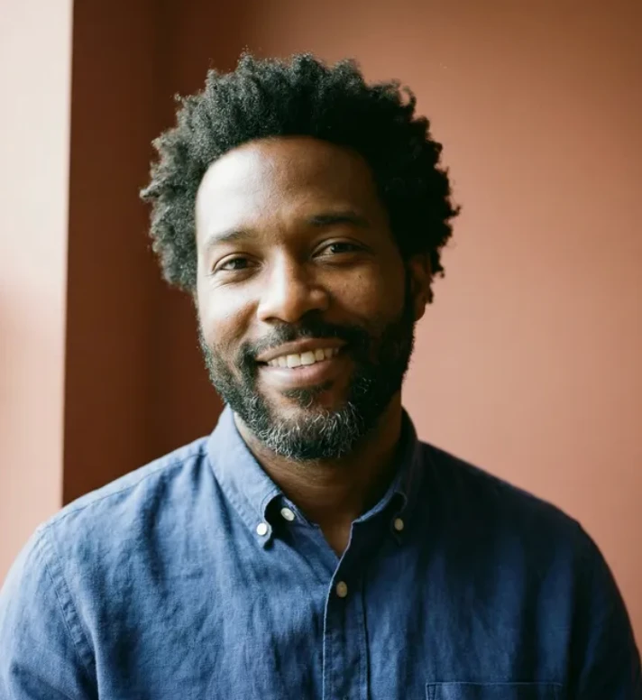

Next upcoming event
Thursday
29 Oct
ISEC 102, Boston
Who gets to say no?
Dr. Anika RaoInstitute for Public-Interest Technology
A speaker series with a focus on AI governance that aims to make the rules for AI a public conversation.
Our mission is to open the questions that shape AI governance to everyone they affect, not only the people who write the rules.
Each semester we invite researchers, lawyers, policymakers and practitioners to present one clear argument about how AI should be built, audited and held to account, followed by open questions from the room.
We meet every other Thursday during the academic term, from 4:00 to 5:15 pm ET in ISEC 102 and online. Every session is free and open to students, staff and the public.
Organized by HCXAI Lab at Northeastern University
Thursday
29 Oct
ISEC 102, Boston
Dr. Anika RaoInstitute for Public-Interest Technology
Every talk runs Thursday from 4:00 to 5:15 pm Eastern Time in ISEC 102, 805 Columbus Avenue, Boston, and is streamed online. Three talks are left this semester.
Thursday
29 Oct
ISEC 102
Due process when algorithms decide: what a real right to contest a machine’s decision would demand from regulators and builders.
Dr. Anika RaoInstitute for Public-Interest Technology
Thursday
12 Nov
ISEC 102
Third-party AI audits are becoming law. Who is qualified to certify a model, what can an audit actually see, and how does it stay independent?
Mei Lin TranCivic Data Lab
Thursday
10 Dec
ISEC 102
Training data is gathered from millions of people who never agreed to it. Community-led models for stewardship, from neighbourhood data trusts to collective licensing.

Dr. Marcus ElleryCenter for Community Data Governance
Thursday
08 Oct
ISEC 102
Who goes missing when public agencies train systems on the records they happen to keep.
Dr. Sofia MarínSchool of Public Policy
Thursday
24 Sep
ISEC 102
Why documentation written for engineers cannot stand in for the permission of the people a system affects.
Jordan OkaforLaw and Technology Clinic
Thursday
10 Sep
ISEC 102
The opening hearing: legislatures, standards bodies, companies and courts, and where the public fits among them.
Prof. Helen AchterbergCentre for Technology Governance

Ahead of Dr. Anika Rao’s talk, the series editors set out the questions a real appeal process for automated decisions has to answer: notice, reasons, a human who can change the outcome, and a deadline that means something.
Dr. Sofia Marín on the people public datasets leave out, and why a fairer model cannot fix a register that never recorded them.

Jordan Okafor argued that disclosure written for engineers cannot carry the weight of permission. The room pushed back on what consent at scale could look like.

The rules for AI are being written now, mostly in rooms the public never sees. We wanted one room in Boston where they are argued out loud.